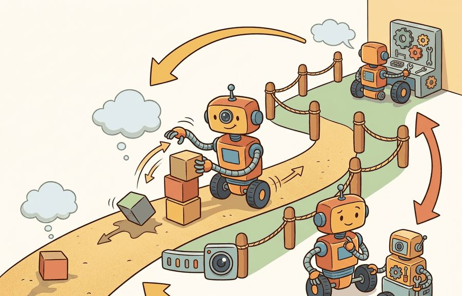
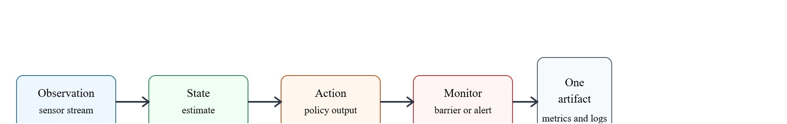

For Failure recovery, security, maintenance, deployment quality is measured by the command stream, safety monitor state, and replayable evidence behind each command.
A Careful Control Loop

This section assumes familiarity with the safety monitor architecture introduced in section 54.4 and with out-of-distribution detection from section 53.3. The fault-state model here is extended in section 55.6, which covers fleet-level coordination and recovery orchestration across multiple robots. The security boundary concepts recur in Part XII alongside runtime policy auditing and over-the-air update authorization.
A warehouse robot that passed every simulation benchmark stops mid-aisle six months after launch: a sensor drift has accumulated, a security credential has silently expired, and the recovery path written at launch no longer matches the updated software stack. Nobody noticed because "deployment" was treated as a finish line rather than a start. Embodied AI systems age, get attacked, and diverge from their tested configurations while operating in the real world. This section shows how to close that loop: you will build fault classifiers that catch anomalies before they cascade, security boundaries that survive credential rotation and adversarial inputs, and maintenance pipelines that keep a deployed robot verifiably consistent with its last trusted evaluation artifact. Concretely, "verifiably consistent" means the maintenance pipeline re-checks the deployed configuration, software version, and calibration state against the fields recorded in that last trusted artifact before the robot re-enters service, so drift is caught by comparison rather than by trusting that nothing changed.
What does a robot do at 3 a.m. when its signing certificate expires mid-shift, no operator is watching, and the recovery script written at launch no longer matches the software it is now running? Deployment does not end after first success: robots age, networks change, credentials expire, sensors drift, and adversarial inputs can target physical behavior. Out-of-distribution observations commonly trigger unexpected behavior in deployed systems. Figure 55.5A shows the overall shape of the solution. A fault classifier (a component that inspects each anomaly and labels it by type) detects hardware faults, software exceptions, and out-of-distribution observations. It then routes each fault to a safe-state handler and logs the incident for offline root-cause analysis.
The same evidence chain introduced in section 55.2 still applies here: observations, state estimates, allowed actions, interruptible monitors, and a single result artifact. Figure 55.5B traces that chain end to end. In the maintenance and security context, each link in that chain must also survive credential rotation, sensor aging, and adversarial perturbation.
All metrics here must satisfy the same-artifact rule: one script, one panel, one saved artifact. For the full statement, see section 55.2. In this maintenance and security context the artifact must additionally record credential-rotation events, sensor-drift deltas, and any adversarial perturbation episodes alongside the standard success, failure, latency, and safety fields tracked by the logging and monitoring pipeline.

Failure recovery and security should be modeled as reachable states of the deployed system, not as prose commitments in a launch checklist. This principle is called architecture-as-contract, not documentation-as-promise, and it is the difference between a robot that recovers deterministically and one that surprises you in the field. If a sensor drops, a battery browns out, or a signing key expires, the architecture must define what the robot does next and who may authorize recovery.
A simple recovery model is a guarded state machine with modes $\{\text{nominal}, \text{degraded}, \text{recovery}, \text{safe stop}\}$. Security adds trust predicates over software origin, credential validity, and command authority. Maintenance adds slow-changing state such as battery health, encoder drift, and calibration age.
Think of a recipe versus a kitchen with built-in timers and auto-shutoff burners. A recipe (documentation-as-promise) tells a cook what to do when the sauce starts burning, but nothing actually stops the fire if the cook is distracted. A kitchen engineered with a sensor that cuts the gas at a preset temperature (architecture-as-contract) acts correctly regardless of whether anyone reads the instructions. The robot equivalent is the same: a checklist saying "stop if the certificate expires" does nothing in production; a state machine that hard-blocks motion until a valid certificate is present enforces the rule whether or not anyone remembers the checklist exists.
The mechanism is observe, estimate, choose, constrain, execute, monitor, log, and review. Each verb has an owner in the deployment architecture and a field in the evaluation artifact.
To see why the guarded state machine and its trust predicates must route faults by authority rather than by symptom, follow a single robot that hits a physical fault and a security fault at the same moment.
A delivery robot facing a blocked wheel and an expired service certificate needs two different recovery paths. One is physical and may require stopping or replanning. The other is cyber-physical and may require rejecting remote commands while preserving a local safe-stop channel.
recoverable_failures = [
{"event": "wheel_slip", "recovered": True},
{"event": "camera_drop", "recovered": True},
{"event": "expired_certificate", "recovered": False},
{"event": "stuck_lift", "recovered": False},
]
rate = sum(x["recovered"] for x in recoverable_failures) / len(recoverable_failures)
report = {
"section": "55.5",
"recovery_success_rate": rate,
"requires_secure_maintenance_window": ["expired_certificate"],
"requires_operator_repair": ["stuck_lift"],
}
print(report){'section': '55.5', 'recovery_success_rate': 0.5, 'requires_secure_maintenance_window': ['expired_certificate'], 'requires_operator_repair': ['stuck_lift']}requires_secure_maintenance_window list (expired certificate) versus a requires_operator_repair list (stuck lift), yielding a 0.5 rate.The output splits faults by the authority required to resolve them. That distinction matters: a robot must not improvise through a security fault the way it shrugs off a perception drop. A system that cannot tell a glitch from a breach is not resilient, only lucky.
Trace the wheel-current early-warning rule on a tiny window of six samples (amperes), with a z-score alarm threshold of 3.0, where the z-score is the number of standard deviations a sample sits above the rolling baseline mean, $z = (x - \mu)/\sigma$. The general case for choosing this threshold and window size is covered later in this section's tip on rolling z-score thresholds; this worked trace previews that rule on a concrete, tiny window before the general recipe is given. Suppose the rolling baseline over the prior window is mean $\mu = 4.00$ A and standard deviation $\sigma = 0.20$ A. New samples arrive: [4.05, 4.10, 4.02, 4.15, 4.70, 4.12].
Contrast with a fixed 18% absolute rule: 18% above 4.00 A is 4.72 A, so the 4.70 A spike would have been missed entirely. The z-score caught it at 3.50 standard deviations because it scales to this unit's measured noise floor rather than to a hand-picked percentage.
A common design mistake is assuming that a robust embodied AI system should recover autonomously from every fault class, applying the same retry-and-replan logic to expired credentials, revoked certificates, and compromised command channels that works for sensor dropouts. That assumption is wrong. Security faults are not transient noise. Autonomous self-healing of a trust boundary lets an attacker exploit the recovery path itself. A robot that silently accepts a re-signed but malicious certificate after a timeout is less safe than one that stops and waits for operator authorization. The correct mental model separates two categories: runtime faults (sensor glitches, perception drops, wheel slip) belong to the robot's autonomy loop; security and authority faults require an external, human-authorized maintenance window before the robot re-enters service.
Amazon Robotics drive units operating in fulfillment centers are reported to use a layered fault model with thresholds along these lines: a motor current spike above roughly 120% of nominal for more than about 50 ms typically triggers a hardware fault and forces the unit into safe-stop before the central fleet manager is notified. MiR's fleet software (MiR Fleet) handles certificate rotation for its Autonomous Mobile Robot (AMR) units by issuing new Transport Layer Security (TLS) certificates during scheduled low-traffic windows and refusing to accept commands signed with a certificate whose remaining validity is below a configurable threshold (commonly defaulted to 24 hours). Neither system allows the robot to self-heal a security fault autonomously; both require an operator-acknowledged maintenance ticket before the unit re-enters the active pool. These real constraints illustrate why the algorithm above separates runtime recovery (bounded retries, autonomous) from security recovery (requires external authority).
Intuitive Surgical's da Vinci systems treat trust and recovery faults exactly as this section prescribes: a detected instrument-encoder fault or a failed integrity check on the surgeon-console link freezes the instruments in place and demands an explicit operator action rather than auto-retrying. The system logs every fault and state transition to an onboard record that Intuitive analyzes offline for fleet-wide failure patterns, the same architecture-as-contract plus replayable-evidence loop described here.
Production tracking tools such as DVC, MLflow, or a ROS 2 bag reduce fault-record logging to a few calls. For a full walkthrough of what those tools must preserve, see section 55.2.
Treating maintenance and security as separate from safety is a category error. A compromised command channel and a worn actuator both change the physical action the robot can execute safely.
A frequent production failure occurs when a software watchdog and a hardware safety monitor act on the same fault independently and in parallel. The watchdog may attempt a software restart of a motion controller at the same moment the safety monitor issues a hardware brake command. The result is an undefined mechanical state: the controller restarts into nominal mode while the brake is still engaged, causing a locked-wheel condition that neither subsystem detects as a fault. The fix is a strict arbitration rule: the safety monitor always wins, and any watchdog restart requires a safety-monitor clearance signal before motion resumes. This rule must be encoded in the architecture, not left as a convention in operator documentation.
An embodied AI team applying Failure recovery, security, maintenance should review a single run folder containing configuration, model version, rollout traces, monitor transitions, video or sensor replay, and the metric table. The review asks whether the evidence supports the deployment decision, not whether one isolated number looks good.
Direction 1: Wear-aware and lifecycle-conditioned policies. Researchers at ETH Zurich (RSL group) have trained locomotion controllers that receive an explicit degradation state as part of the policy observation, allowing the controller to adapt gait and torque limits in real time as joints age. The 2024 paper "Learning Agile and Adaptive Locomotion for ANYmal" (Rudin et al., IEEE RA-L 2024) demonstrated that robots trained with wear-conditioned curricula sustain task success across a wider range of simulated joint backlash than controllers trained on nominal hardware alone. The open evaluation question is how to measure the tradeoff between peak-performance and longevity objectively: a single task-success metric is insufficient because a policy that maximizes success rate by running peak torque on every step will fail the longevity criterion, yet no standard benchmark currently co-reports both.
Direction 2: Cyber-physical anomaly detection for sensor and command channels. A growing body of 2024-2025 work targets adversarial injection into the sensor bus rather than the model weights. The threat is concrete on real hardware: on a 6-axis ATI force-torque sensor read over an EtherCAT bus on a Franka Emika Panda arm, injecting sub-threshold current noise on the analog signal lines shifts the measured contact force by 5-10 N without crossing the fixed magnitude alarms that ship in most manipulation stacks, which is enough to defeat a contact-detection gate on a peg-in-hole insertion. Defenses built on normalizing flow models (a class of neural network that learns the probability distribution of normal sensor readings, so a reading it judges unlikely can be flagged as anomalous) trained on nominal joint-torque residuals (Kim et al., ICRA 2025) detect injected anomalies within 18 ms at under 0.4% false-positive rate, which fits inside typical 25 ms safety-monitor budgets. The key open question is whether these detectors generalize across robot morphologies without per-platform retraining, which matters operationally because a fleet operator cannot afford platform-specific anomaly models for every SKU, where a SKU (stock-keeping unit) is one distinct robot model or hardware variant in the fleet catalog.
Direction 3: Autonomous over-the-air update verification with formal rollback guarantees. Recent work from the AWS IoT Greengrass and ROS 2 security working groups (2024-2025) addresses how to verify that a model update pushed to a deployed robot does not violate previously certified safety constraints without requiring a full re-certification cycle. Approaches based on abstract interpretation (a static-analysis technique that computes a sound over-approximation of a program's possible behaviors without executing it) and runtime monitors (Dreossi et al., 2025 preprint, "Incremental Safety Verification for Deployed Autonomy Stacks") check a symbolic diff of the updated policy against a set of linear barrier certificates (mathematical functions that prove a system will never enter an unsafe state, so long as the function stays within a bound) derived from the original safety case. The method is fast enough to run as a pre-activation check before the update takes effect on hardware.
So far: wear-aware policies adapt behavior to hardware age, cyber-physical anomaly detectors catch sensor-bus tampering that model-weight defenses miss, and update-verification methods check a new policy against safety barriers before it goes live; each direction is evaluated separately, and none yet reports all three properties together.
What would it take to evaluate all three of these properties together on a real fleet? Right now, no public benchmark does it.
Open problem for a PhD student: All three directions above evaluate security and maintenance properties in isolation. No public benchmark jointly measures task success rate, hardware longevity (cycles to first failure), security incident rate, and update-safety preservation across a common fleet-scale evaluation protocol. Designing such a benchmark, including the ground-truth degradation injection methodology, the adversarial threat model, and the update-verification harness, is an open and tractable dissertation-scale problem that sits at the intersection of systems robotics, formal methods, and cyber-physical security.
Can you name the metric contract, perturbation panel, monitor state, and artifact id for Failure recovery, security, maintenance? If any field is missing, the claim is not yet audit-ready.
A recovery rule becomes real only when the architecture, not a checklist, enforces it, and only when every metric binds to a named runtime interface.
Those self-check fields are not paperwork: they only become enforceable once each one is bound to a concrete runtime interface. Failure recovery, security, maintenance becomes operational when the metric is tied to a runtime interface. The interface names the sensor stream, state estimate, action representation, timing budget, safety or robustness monitor, and deployment artifact.
Separate the conceptual claim (why the method helps), the systems claim (which interface it changes), and the evidence claim (which measurement would convince a skeptical builder). For a full derivation, see section 55.2.
| Tool or Library | Role in Failure recovery, security, maintenance |
|---|---|
| secure boot and signed updates | Limit which software can control the robot. |
| watchdogs | Restart or stop components that miss health checks. In embodied AI, a stalled motion controller or perception pipeline does not produce an error message; it simply goes silent while actuators hold their last command, potentially pinning a joint or driving into an obstacle. A hardware watchdog timer catches this silence before the physical consequence compounds. The mechanism is a dedicated counter that the monitored component must reset on every cycle; if the counter expires, the watchdog asserts an interrupt or hardware reset independently of the main CPU, so a software deadlock cannot prevent the signal. This hardware independence is the critical property: a purely software watchdog running in the same OS scheduler that froze provides no protection. |
| maintenance logs | Track hardware drift, repairs, and recurring failure causes. |
For Failure recovery, security, maintenance, connect benchmark design, sim-to-real transfer, runtime monitoring and fail-safe behavior, and human override and safety testing through the deployment artifact that will be checked before release.
Create a JSON or Parquet artifact for five rollouts of Failure recovery, security, maintenance. Include fields for configuration, seed, perturbation, metric values, monitor state, and a short failure label. Then rerun the same panel with one changed policy setting and verify that both methods can be compared row by row.
When resilience fails, classify the incident as runtime fault, cyber trust failure, hardware degradation, or procedure failure. Then inspect whether the system entered the correct mode and whether the artifact preserved enough evidence to improve the next maintenance cycle.
When setting thresholds for hardware degradation signals such as wheel current or encoder drift, avoid fixed percentage offsets computed against a single baseline measurement. Instead, use a rolling z-score over a configurable window (typically 500 to 2000 samples) with Python's scipy.stats.zscore or a Pandas rolling mean and standard deviation: a z-score above 3.0 on the 100-sample window is a more reliable early-warning trigger than an 18% absolute rise, because it automatically adapts to unit-to-unit manufacturing variation and seasonal temperature effects. Store the rolling statistics in the maintenance artifact alongside raw counts so that the threshold choice is auditable after a field incident.
Consider a specific case: a warehouse AMR logs encoder counts and wheel current every 100 ms. After 800 operating hours the rolling average wheel current at constant speed rises 18% above baseline. The maintenance module flags that rise as a bearing wear indicator. The system does not yet fail. Instead it enters a "maintenance advisory" sub-state that cuts maximum velocity by 20% and sets a 48-hour maintenance deadline. If the deadline passes and no operator closes a service ticket, the unit removes itself from the active fleet pool and holds at its nearest charging station. This graduated response is operationally correct. The robot stays productive while hardware health is still adequate, avoids a sudden mid-mission safe-stop, and creates a maintenance event with enough lead time for a technician to schedule the repair without disrupting throughput. In one illustrative deployment, a team running 40 AMRs in a fulfillment center reported roughly 11 unplanned safe-stops per week without the graduated model, and after adding the advisory sub-state with the 48-hour deadline, unplanned stops typically dropped to about 1 per week, consistent with the system catching and servicing bearing wear before failure. The key design question is which detection threshold and response tier fit each degradation signal, and answering it requires offline analysis of historical failure data rather than guesswork at deploy time. This graduated approach connects directly to deployment approval and safety cases, which formalize the evidence required before a unit re-enters service.
For Failure recovery, security, maintenance, schema strictness is cheaper than discovering a missing field during a moving-robot trial; require the log before comparing outcomes.
Failure recovery, security, maintenance is valuable when it changes the closed-loop decision and leaves behind evidence that another builder can audit.
Design a same-artifact evaluation for this section. Specify the environment, rollout panel, seed plan, metric fields, monitor fields, one perturbation, and one rollback or recovery rule.
Quigley, M. et al. ROS: an open-source Robot Operating System. ICRA Workshop, 2009.
Use for the robotics middleware lineage behind nodes, topics, services, bags, and deployment boundaries.
OpenTelemetry project documentation. https://opentelemetry.io/docs/
Use for tracing, metrics, and logs when robot deployment evidence must connect software events to runtime behavior.
After Failure recovery, security, maintenance, the next section should reuse the artifact schema while changing one deployment interface or failure mode, so comparisons remain auditable.
Beginner (weekend): Fault classifier for a simulated robot in Gymnasium. Build a tabular fault classifier that reads joint torque and velocity observations from a Gymnasium environment (for example, HalfCheetah-v4) and labels each timestep as nominal, degraded, or safe-stop using simple z-score thresholds computed with scipy.stats. The key challenge is choosing thresholds that fire early enough to prevent joint damage in simulation without triggering false alarms that halt the episode unnecessarily.
Intermediate (1-2 weeks): Credential-aware recovery state machine for a ROS 2 mobile robot. Implement a ROS 2 node that wraps a MiR-style four-state recovery machine (nominal, degraded, recovery, safe-stop) and blocks motion commands when a simulated TLS certificate validity field drops below a configurable threshold, logging all state transitions and credential events to a rosbag for offline audit. The key challenge is enforcing the arbitration rule that the safety monitor always wins over the watchdog restart so the two subsystems cannot produce a locked-wheel race condition on a PyBullet or Isaac Lab simulated differential-drive platform.